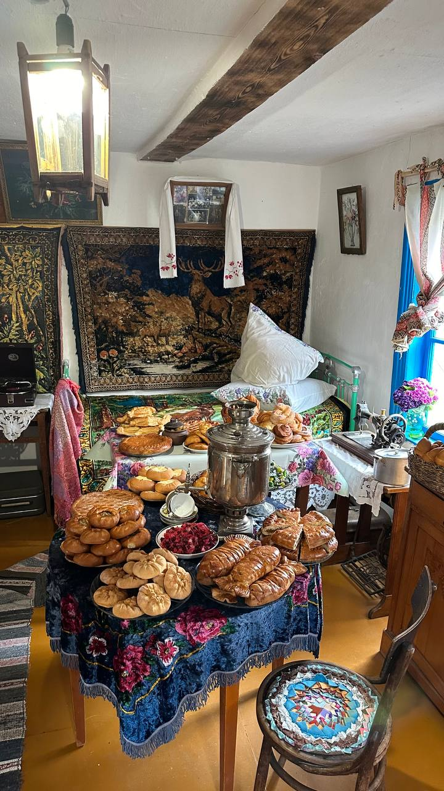
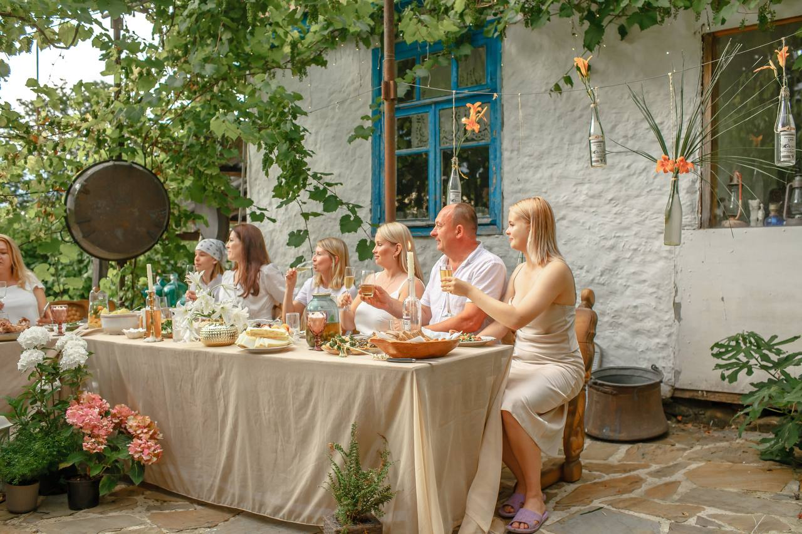
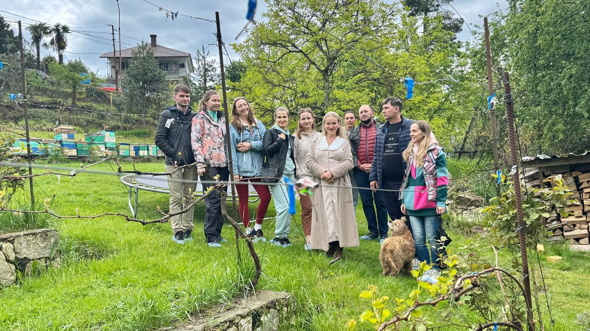
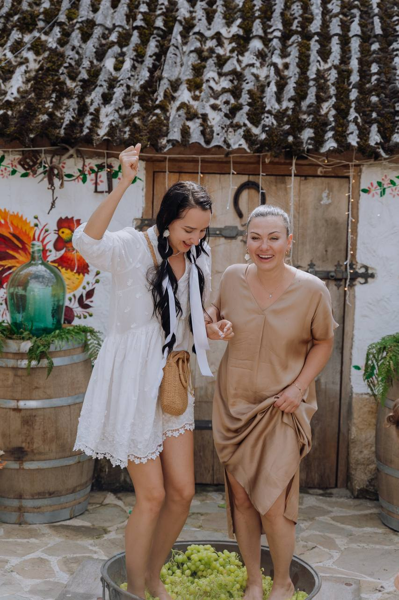
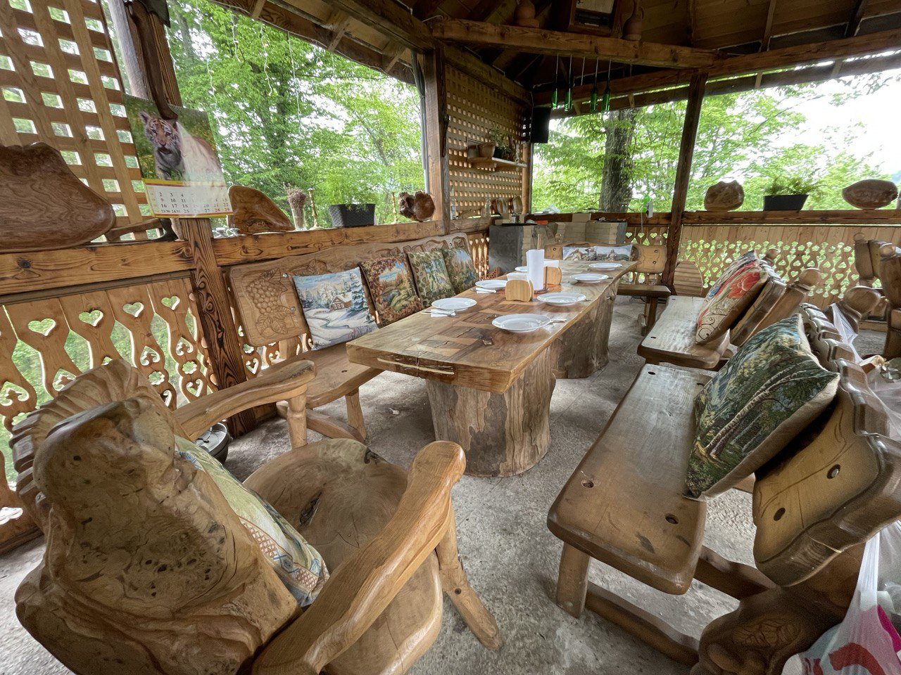
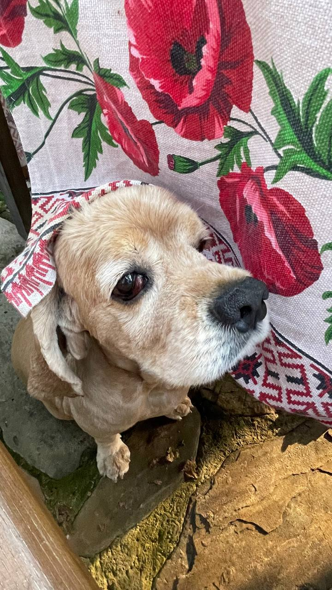
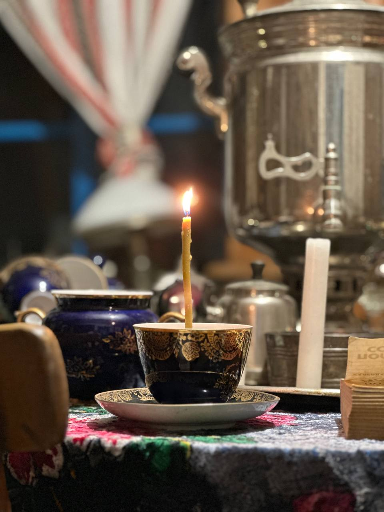
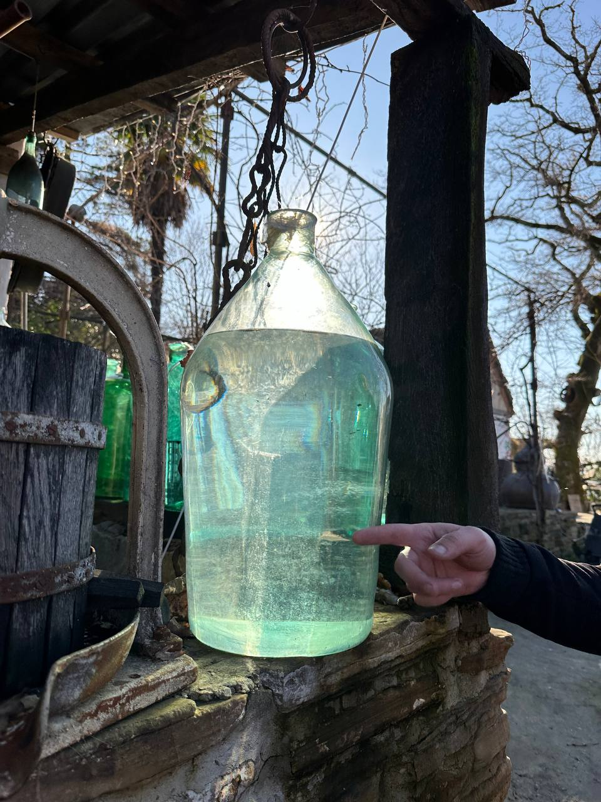
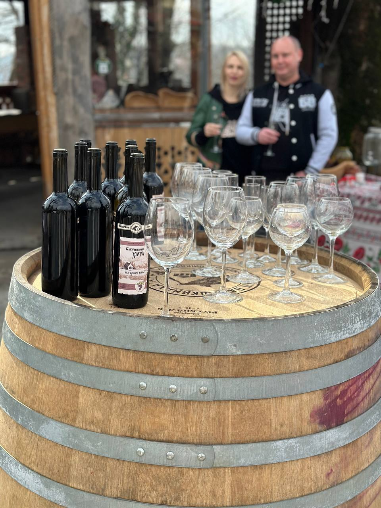
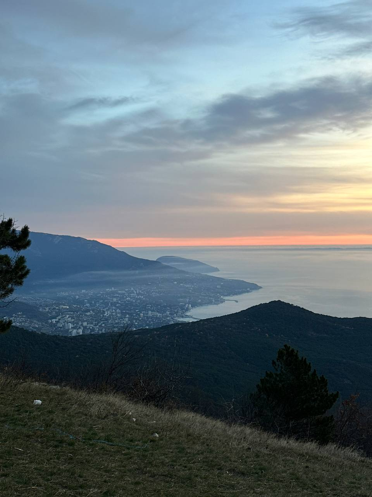

Место, которое я восстановил для своей семьи
Полгектара в горах Сочи. Здесь каждый уголок мне дорог.
хата-музей
Хата-музей
Это дом моей бабушки Иустиньи, построенный в 1947 году из сарая, глины и соломы. Я восстановил её, сохранил печь, старый пол, каркас. Здесь всё, что помню с детства: керосиновые лампы, посуда, утварь. Некоторые вещи искал по всей стране — на антикварных аукционах, через знакомых старьёвщиков из Тулы, из Родников.
Нетипичное для Кавказа строение — бабушка была украинкой и принесла колорит своей эпохи сюда. Здесь нет стёкол и заградительных ленточек. Это музей, в котором можно всё потрогать, прожить своё детство, вернуться к базовым настройкам.
Среди экспонатов: Псалтырь 1723 года (Киево-Печерская лавра), плюшевый ковёр с оленями, советские ёлочные игрушки, казачий нож пластуна, армянская маслобойка от соседки бабушки Гегец, патефон 1939 года.
«Новостные каналы назвали это место машиной времени.»


территория
Фруктовый сад
Яблони, груши, черешня, хурма, мушмула, киви, кизил, гранат, инжир, фейхоа, шелковица. Каждый месяц что-то зреет. Гости могут сорвать фрукт с ветки — для этого оно и посажено.

виноградники
Виноградники
На территории растут столовые сорта и Изабелла — тот самый, из которого бабушка делала вино. Мини-виноградник с европейскими сортами: Каберне, Саперави, Санджовезе. Основные виноградники — на Тамани.
Подробнее о нашей винодельне →
банкетная площадка
Беседка для банкетов
Вмещает до 30 человек. Летом — сплит-система, зимой — живой огонь. Хозяин готовит сам — на огне, в печи, в коптильне.
Организовать праздник →
деревенский дворик
Деревенский дворик
Собаки, куры, гуси, кошки, кролики. Дети с ними играют, собирают яйца. Деревенская жизнь, без которой я себя не представляю.

Старинные артефакты
Вещи, которые я собирал годами. Каждая со своей историей.

Медные полковые котлы (маркировка 1892 года)

Аламбик (около 300 лет)

Мельница-колодец с коллекцией вин за 14 лет

Как всё зарождалось
Здравствуйте. Я — Роман Васильевич Весловский — хозяин усадьбы «Бабушкина Хата». Родился и вырос в этом самом селе, в горах Сочи. Провёл детство здесь, в этой хате, которую вы видите на фото. Её построила моя бабушка Иустинья в 1947 году.
Бабушка родилась в Омской области, в селе Воскресенское. В 1927 году её отца раскулачили, семье пришлось уехать. Так она оказалась в Сочи, где начинали развивать сельское хозяйство. Бабушка устроилась в Мацестинский чайсовхоз, за заслуги ей дали табачный сарай. Она разобрала его на доски, замесила глину с соломой и слепила эту хату-мазанку. В ней и прошло моё детство.
Я рос здесь, собирал урожай, помогал по хозяйству. Бабушка научила работать с землёй, а вино я впервые делал именно с ней — из Изабеллы за оградой.
Потом жизнь забросила далеко. В 14 лет уехал один в Ташкент, работал в цирке. Армия, работа, торговое предприятие в Сочи. Жил в городе, растил детей. Вроде всё было, а чего-то не хватало.
В начале 2000-х предприятие закрылось. Продал всё, собрал семью и переехал сюда. В эту хату. Жили здесь, пока строил дом.
Хата была в аварийном состоянии. Глина осыпалась, пол прогнил. Оставил каркас, укрепил, перебрал по брёвнышку. Печь отреставрировал — работает до сих пор, иногда ночую в хате для души. Собирал предметы по всей стране — именно то, что было в детстве.
Участок заросший, запущенный. Выкорчёвывал сорняки, высаживал сад. Сначала для себя. Потом соседи, друзья, сарафанное радио, блогеры, телевидение. Новостные каналы назвали «машиной времени». Когда спрашивали название музея, отвечал: «Да какой музей? Это бабушкина хата». Так и приклеилось.
Сегодня здесь живёт семья, растут дети, зреет виноград, приезжают гости.
Не наследство, а наследие
Восстановил родословную. Обновил родовое кладбище — 13 памятников. Восстановил бабушкину хату. Про нас снимают федеральные каналы. Прославляю свой род — чувствую, что на верном пути.
Каждый, кто входит в эту хату, умолкает на минуту — вспомнить своих. Я не хочу оставлять наследство. Я оставляю наследие.
Чем я живу
Семья и корни
Семерых детей воспитал. Младшие растут здесь. Главное — уважение к роду, к фамилии, к памяти предков.
Труд и земля
Дети выходят на участок и забывают про гаджеты. Собирают яйца, болтают с курочками. Личный пример воспитывает лучше слов.
Натуральность
Всё без обмана, без химии. Живой продукт лучше искусственного. Дело чести.
Гостеприимство
Люблю принимать гостей. Когда люди уезжают с теплом в душе — значит, всё правильно.